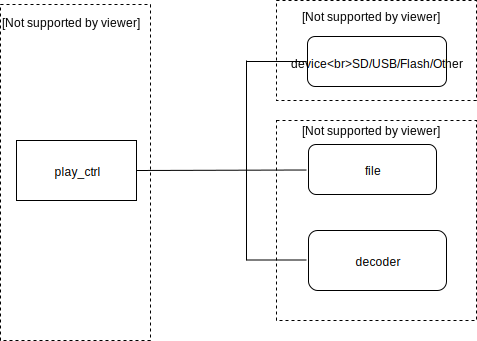
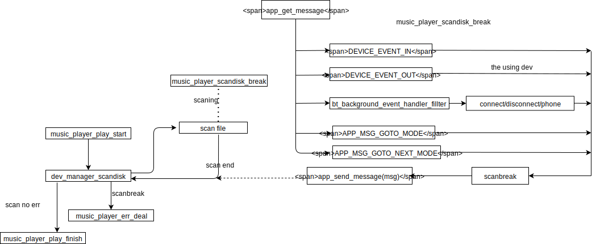

muisc 应用详细设计说明
引言
术语和缩写词
解释 |
缩写和术语 |
|---|---|
sclust |
文件簇号 |
breakpoint |
歌曲断点信息，包括文件信息和解码信息 |
valid dev |
有效播放设备，这个有效是指设备有可播放文件的意思 |
FF |
快进 |
FR |
快退 |
scanbreak |
打断正在扫描设备的过程 |
repeat |
播放循环模式 |
music player |
音乐播放器 |
logo |
设备逻辑盘符 |
evt_logo |
设备上线时对应的设备逻辑盘符 |
vm |
记忆存储区 |
总体设计
需求概述
Music应用主要实现的功能包括：
实现MP3、WMA、WAV、FLAC、APE、M4A、AMR等格式歌曲的播放（格式可选配）。
提供播放/暂停、快进快退、上下曲、设备切换、循环模式切换、路径/序号/簇号播放、录音文件夹过滤、录音/音乐切换播放、文件删除等操作。
支持断点存取。
支持播放信息获取，如：当前文件序号、簇号、断点信息、文件句柄、设备句柄等。
总体框架

模块名称 |
功能简述 |
对应文件 |
|---|---|---|
music_mode |
实现对系统、设备管理器、播放模块等产生的各种消息处理 |
music.c |
music_player |
播放器模块实现歌曲播放、切换、等操作 |
music_player.c |
dev_manager |
设备管理器为设备上下线及查询设备状态等操作提供api接口 |
dev_manager.c |
流程图

数据结构说明
///模式参数结构体
struct __music_task_parm {
u8 type;
int val;
};
///断点信息结构体
struct __breakpoint {
///文件信息
u32 fsize;
u32 sclust;
///解码信息
struct audio_dec_breakpoint dbp;
};
///music模式控制结构体
struct __music {
struct __music_task_parm task_parm;
u16 file_err_counter; //错误文件统计
u8 file_play_direct; //0:下一曲， 1：上一曲
u8 scandisk_break; //扫描设备打断标志
char device_tone_dev[16]; //播放设备logo记录
u32 old_speed; //SD 时钟记录
struct __breakpoint *breakpoint;//断点记录指针
};
应用系统消息
消息分类
系统消息分类：
按键消息（MSG_FROM_APP） 主要是各种按键触发的消息及软件流程发送的消息
设备消息（MSG_FROM_DEVICE） 主要是各种设备上下线消息，本应用主要响应以下消息（in/out）：
DRIVER_EVENT_FROM_SD0
DRIVER_EVENT_FROM_SD1
DRIVER_EVENT_FROM_SD2
DEVICE_EVENT_FROM_OTG
以应用情景对事件分类：
应用模式内部消息（music_app_msg_handler）
设备消息处理（music_device_msg_handler）
公共消息响应（app_default_msg_handler）
公共消息同样会响应一些例如公共按键（模式切换/音量加减等）、音频外设上下线（linein/pc上下线等）、蓝牙事件（连接、通话、播放等）
消息处理
参考2.3详细流程框图
解码器错误处理
错误处理说明
这里的出错误处理是指music应用调用music_player接口时返回值处理，二次开发可以根据实际需求根据不同错误码引导不同的流程设计，SDK默认的错误处理请参考章节2.3详细流程框图。
Music player错误码
///解码错误码表
enum {
MUSIC_PLAYER_ERR_NULL = 0x0, ///没有错误， 不需要做任何
MUSIC_PLAYER_SUCC = 0x1, ///播放成功， 可以做相关显示、断点记忆等处理
MUSIC_PLAYER_ERR_PARM, ///参数错误
MUSIC_PLAYER_ERR_POINT, ///参数指针错误
MUSIC_PLAYER_ERR_NO_RAM, ///没有ram空间错误
MUSIC_PLAYER_ERR_DECODE_FAIL, ///解码器启动失败错误
MUSIC_PLAYER_ERR_DEV_NOFOUND, ///没有找到指定设备
MUSIC_PLAYER_ERR_DEV_OFFLINE, ///设备不在线错误
MUSIC_PLAYER_ERR_DEV_READ, ///设备读错误
MUSIC_PLAYER_ERR_FSCAN, ///设备扫描失败
MUSIC_PLAYER_ERR_FILE_NOFOUND, ///没有找到文件
};
扫盘打断机制
机制说明
设备在music_player调用scandisk接口的时候，会注册music_player_scandisk_break接口（解决长时间扫盘打断问题），在扫描过程会被调用，music_player_scandisk_break函数内部会对消息进行查询， SDK默认会对一些例如按键切换模式、设备插拔、蓝牙连接等触发的事件进行扫盘打断动作，如二次开发有特殊情境需要进行打断，可以在解析到特定的事件后， 将scandisk_break标志位设置为1即可。
机制实现流程图

断点说明
断点控制句柄创建
///获取断点句柄， 后面所有断点读/写都需要用到
breakpoint = breakpoint_handle_creat();
断点信息控制句柄释放
breakpoint_handle_destroy(&breakpoint);
当前播放歌曲断点获取及保存
if (music_player_get_playing_breakpoint(breakpoint, 1/*1:获取所有信息，0：只获取文件信息*/) == true) {
breakpoint_vm_write(breakpoint, logo);
}
从vm获取设备断点信息并断点播放
if (true == breakpoint_vm_read(breakpoint, logo)) {
err = music_player_play_by_breakpoint(logo, breakpoint);
}
API说明
播放器回调接口
播放音乐文件时可注册回调函数到播放器，播放器在对应状态下会执行回调函数。
music_player_play_success
music 解码成功回调接口
原型：
//*----------------------------------------------------------------------------*/
/**@brief music 解码成功回调
@param priv:私有参数， parm:暂时未用
@return
@note 此处可以做一些用户操作， 如断点保存， 显示， 获取播放信息等
*/
/*----------------------------------------------------------------------------*/
static void music_player_play_success(void *priv, int parm)
参数：
名称 |
说明 |
|---|---|
parm |
参数（暂时未用） |
priv |
私有参数 |
示例：
static const struct __player_cb music_player_callback = {
.start = music_player_play_success,
.end = music_player_play_end,
.err = music_player_decode_err,
};
music_player_play_end
music 解码结束回调处理
原型：
//*----------------------------------------------------------------------------*/
/**@brief music 解码结束回调处理
@param priv:私有参数， parm:decoder解码器返回的事件
@return
@note 此处将根据解码器返回的事件做出对应处理
*/
/*----------------------------------------------------------------------------*/
static void music_player_play_end(void *priv, int parm)
参数：
名称 |
说明 |
|---|---|
priv |
私有参数 |
parm |
decoder解码器返回的事件 |
示例：
static const struct __player_cb music_player_callback = {
.start = music_player_play_success,
.end = music_player_play_end,
.err = music_player_decode_err,
};
music_player_decode_err
music 解码错误回调
原型：
//*----------------------------------------------------------------------------*/
/**@brief music 解码错误回调
@param
@return
@note 此处统一将错误通过消息的方式发出， 在music_app_msg_handler中统一响应
*/
/*----------------------------------------------------------------------------*/
static void music_player_decode_err(void *priv, int parm)
参数：
名称 |
说明 |
|---|---|
priv |
私有参数 |
parm |
参数（暂时未用） |
示例：
static const struct __player_cb music_player_callback = {
.start = music_player_play_success,
.end = music_player_play_end,
.err = music_player_decode_err,
};
music_player_scandisk_break
music 播放器扫盘打断接口
原型：
//*----------------------------------------------------------------------------*/
/**@brief music 播放器扫盘打断接口
@param
@return 1:打断当前扫描，0:正常扫描
@note 设备扫描耗时长的情况下， 此接口提供打断机制
*/
/*----------------------------------------------------------------------------*/
static int music_player_scandisk_break(void)
参数： 无
示例： 播放器回调接口直接赋值到播放器回调结构 ，创建播放器（music_player_creat）时把 （播放器回调结构）和（回调的私有参数） 作为参数传入，默认私有参数传NULL。
static const struct __scan_callback scan_cb = {
.enter = scan_enter,
.exit = scan_exit,
.scan_break = music_player_scandisk_break,
};
static const struct __player_cb music_player_callback = {
.start = music_player_play_success,
.end = music_player_play_end,
.err = music_player_decode_err,
};
///播放器初始化
struct __player_parm parm = {0};
parm.cb = &music_player_callback;
parm.scan_cb = &scan_cb;
music_player_creat(NULL, &parm);
设备消息响应接口
music_device_msg_handler
原型：
//*----------------------------------------------------------------------------*/
/**@brief music 设备消息响应接口
@param msg:消息
@return 0
@note
*/
/*----------------------------------------------------------------------------*/
static int music_device_msg_handler(int *msg)
参数：
名称 |
说明 |
|---|---|
msg |
消息 |
示例：
int msg[16];
if (app_get_message(msg, ARRAY_SIZE(msg), NULL)) {
switch (msg[0]) {
case MSG_FROM_DEVICE:
music_device_msg_handler(msg + 1);
break;
}
}
app消息响应接口
music_app_msg_handler
原型：
//*----------------------------------------------------------------------------*/
/**@brief music app消息响应接口
@param msg:消息
@return 0
@note
*/
/*----------------------------------------------------------------------------*/
static int music_app_msg_handler(int *msg)
参数：
名称 |
说明 |
|---|---|
msg |
消息 |
示例：
int msg[16];
if (app_get_message(msg, ARRAY_SIZE(msg), NULL)) {
switch (msg[0]) {
case MSG_FROM_APP:
music_app_msg_handler(msg + 1);
break;
}
}
播放模式设置
music_task_set_parm
原型：
//*----------------------------------------------------------------------------*/
/**@brief music 模式切换前参数设置
@param type:播放方式,暂时支持：
MUSIC_TASK_START_BY_NORMAL：首次播放按照正常断点播放
MUSIC_TASK_START_BY_SCLUST：首次播放按照簇号播放
val:播放参数
@return
@note 首次播放执行参考music_player_play_start接口
*/
/*----------------------------------------------------------------------------*/
void music_task_set_parm(u8 type, int val)
参数：
名称 |
说明 |
|---|---|
type |
播放方式 |
val |
播放参数 |
示例：
//正常断点播放
music_task_set_parm(MUSIC_TASK_START_BY_NORMAL,NULL);